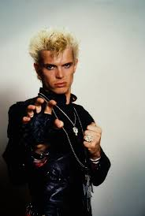
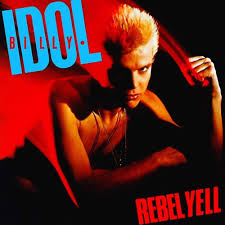

Billy Idol, um ícone do rock dos anos 80, emergiu da cena punk de Londres para se tornar uma estrela global. Sua imagem de bad boy, combinada com sua voz distintamente rasgada, o catapultou para o estrelato. Seu álbum "Rebel Yell", lançado em 1983, foi um marco em sua carreira, apresentando hinos como a faixa-título e "Eyes Without a Face". Com uma mistura de punk, new wave e rock, o álbum encapsula o espírito rebelde da época e continua a ser uma referência essencial na história da música.


Album Rebel Yell